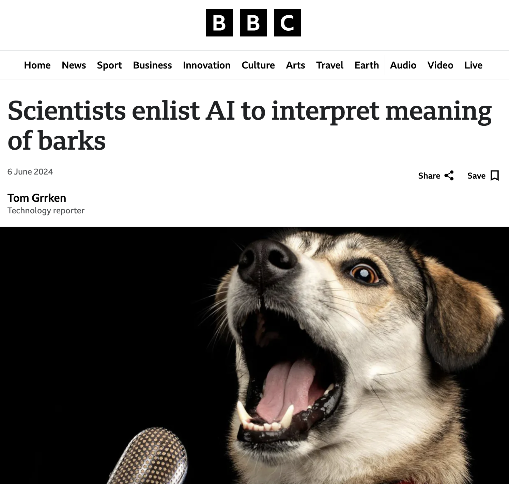

üêæ CrowdBark: A Crowdsourced Study of Dog Communication Using AI

Submit a short video of your dog — and contribute to groundbreaking research
Your dog’s videos can help us understand animals using AI
Submit Your VideoWe are investigating how dogs use facial expressions, body postures, and vocalizations together to convey meaning to their owners and other animals. By analyzing these multimodal signals, we aim to uncover patterns that reveal how dogs communicate emotions, intentions, and needs.
To guide our research, we focus on several key aspects of dog communication:
Important: Your submitted videos will be used as data sources in scientific publications. For this reason, please avoid including identifiable human faces, private conversations, or any personal information. Our focus is exclusively on the dogs and their communication.
You’ll answer questions about:
Only adults (18+) may participate.
You may provide an email address if you’d like to be notified of study outcomes.
As featured in BBC:
